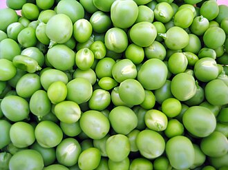

グリーンピースの生産量 都道府県ランキング
全13県の順位と、とれた量
グリーンピースが日本でいちばん多くとれるのは和歌山県です。1,700 tで、全国（4,110 t）の41%を占めます。

| 順位 | 都道府県 | 収穫量 | 全国に占める割合 |
|---|---|---|---|
| 1位 | 和歌山県 | 1,700 t | 41% |
| 2位 | 鹿児島県 | 479 t | 12% |
| 3位 | 北海道 | 363 t | 8.8% |
| 4位 | 大阪府 | 168 t | 4.1% |
| 5位 | 福岡県 | 136 t | 3.3% |
| 6位 | 兵庫県 | 124 t | 3.0% |
| 7位 | 岐阜県 | 117 t | 2.8% |
| 8位 | 熊本県 | 111 t | 2.7% |
| 9位 | 徳島県 | 97 t | 2.4% |
| 10位 | 京都府 | 84 t | 2.0% |
| 11位 | 奈良県 | 82 t | 2.0% |
| 12位 | 福島県 | 73 t | 1.8% |
| 13位 | 滋賀県 | 72 t | 1.8% |
グリーンピースの生産量の推移（令和2年産〜令和6年産）
全国の収穫量は、令和2年産の5,600 tから令和6年産の4,110 tへ、27%減りました。この間、1位はずっと和歌山県です。
| 年 | 全国 | 1位 | 2位 | 3位 |
|---|---|---|---|---|
| 令和6年産 | 4,110 t | 和歌山県1,700 t | 鹿児島県479 t | 北海道363 t |
| 令和5年産 | 4,410 t | 和歌山県1,850 t | 鹿児島県478 t | 北海道402 t |
| 令和4年産 | 4,900 t | 和歌山県2,070 t | 鹿児島県657 t | 北海道327 t |
| 令和3年産 | 5,600 t | 和歌山県2,420 t | 鹿児島県753 t | 北海道304 t |
| 令和2年産 | 5,600 t | 和歌山県2,490 t | 鹿児島県768 t | 熊本県249 t |
この数字について
- 分類：マメ科
- 全国の収穫量：4,110 t
- この数字が表すもの：収穫量（畑や田でとれた重さ）
- 調査：作物統計調査 作況調査（野菜） 令和6年産
- 13県分を調査（調査していない県は順位に入りません）
グリーンピースの生産量について、よくある質問
- グリーンピースの生産量が日本一の都道府県はどこですか？
- 和歌山県です。作物統計調査 作況調査（野菜）（令和6年産）で1,700 tでした。
- グリーンピースの生産量ランキング2位・3位はどこですか？
- 2位は鹿児島県（479 t）、3位は北海道（363 t）です。
- グリーンピースの生産量ランキング4位・5位はどこですか？
- 4位は大阪府（168 t）、5位は福岡県（136 t）です。グリーンピースの全13県の順位は上の表のとおりです。
- グリーンピースの全国の生産量はどれくらいですか？
- 4,110 t（令和6年産）です。